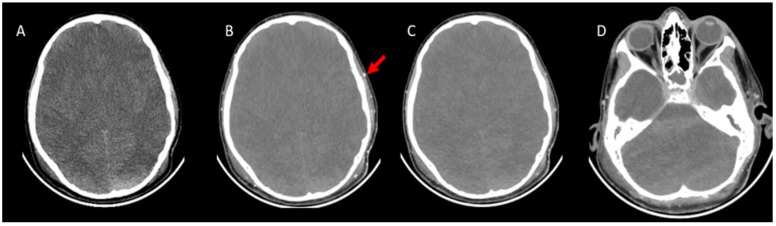
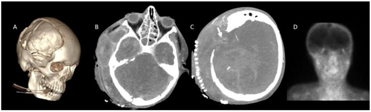
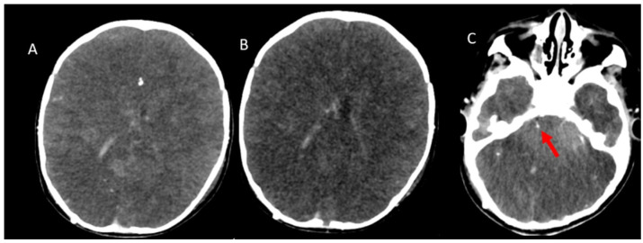
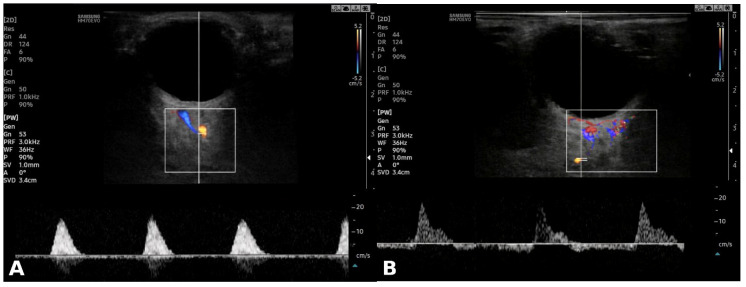

3040 — Chẩn đoán chết não ở trẻ em và sơ sinh: tuổi quyết định khoảng quan sát, test ngưng thở và test bổ trợ
Tags: pattern:mat-tuoi-mau-nao pattern:phu-nao-lan-toa pattern:mat-phan-biet-xam-trang vung:nao vung:than-nao score:CTA-4-diem protocol:CTA-chet-nao protocol:test-ngung-tho protocol:sieu-am-hoc-mat
Mức chắc chắn (certainty): tổng hợp y văn (literature synthesis) — ghép tổng quan thuật toán chứng nhận chết não nhi (PMC8578760), meta phân tích độ chính xác test bổ trợ ở trẻ sơ sinh–trẻ em: 39 bài, 18 test, 866 bệnh nhân (PMC10203011), nghiên cứu CTA 43 trẻ đã chết não lâm sàng (PMC11945848), nghiên cứu siêu âm Doppler hốc mắt 28 trẻ (PMC13117453), ca test ngưng thở trên ECMO (PMC7359818) và ca ngộ độc nọc rắn giả chết não (PMC12828855). Chưa có ca nguyên văn do nhóm tự chụp.
Câu hỏi thực hành: bé trai 13 tuổi ngừng tim sau đuối nước, ROSC ngày thứ 3, GCS 3, đồng tử giãn không phản xạ, mất phản xạ giác mạc–ho; đang thở máy, vận mạch 0,1 µg/kg/phút, MAP 62 mmHg, thân nhiệt 35,4 °C. Bác sĩ hồi sức hỏi: đã đủ điều kiện chẩn đoán chết não chưa, khám mấy lần và cách nhau bao lâu, test ngưng thở làm thế nào, và nếu không làm được thì chụp gì? Bài chốt bốn điểm khác người lớn: (1) tuổi quyết định khoảng quan sát (sơ sinh đủ tháng ≤ 30 ngày: 24 giờ; 30 ngày–18 tuổi: 12 giờ); (2) trẻ đẻ non không được chẩn đoán chết não; (3) hai lần khám + hai test ngưng thở do hai bác sĩ khác nhau; (4) test bổ trợ ở trẻ yếu hơn ở người lớn — test chính xác nhất là xạ hình HMPAO (Se 0,99/Sp 0,97) nhưng bằng chứng chỉ ở mức thấp–rất thấp. Nối 3038 – Chẩn đoán chết não ở người lớn, 3039 – Nhiễm trùng shunt VP, 3035 – HIE sau ngừng tim, 211 – Đột quỵ não, 201 – Protocol sọ não.
1. Tổng quan bệnh học – cơ chế hình ảnh: vì sao trẻ không phải “người lớn thu nhỏ”
- Sinh lý nền giống người lớn: chết não là mất không hồi phục chức năng toàn bộ não kể cả thân não, xác định bằng hôn mê sâu + mất mọi phản xạ thân não + mất khả năng thở tự chủ (test ngưng thở), sau khi đã loại trừ mọi yếu tố gây giả chết não.
- Khác biệt cốt lõi nằm ở tuổi:
- Trẻ đẻ non (< 37 tuần): KHÔNG đủ tiêu chuẩn chẩn đoán chết não vì phản xạ thân não chưa hoàn chỉnh — không thể phân biệt “chưa phát triển” với “đã mất” (PMC8578760).
- Sơ sinh đủ tháng đến 30 ngày tuổi: hai lần khám cách nhau 24 giờ.
- 30 ngày đến 18 tuổi: hai lần khám cách nhau 12 giờ.
- Cả hai lần khám và hai test ngưng thở phải do hai bác sĩ khác nhau thực hiện; thời điểm chết là sau khi hoàn tất lần khám + test ngưng thở thứ hai (PMC8578760).
- Vì sao phải lặp lại lâu hơn ở sơ sinh: ở trẻ nhỏ, hộp sọ còn thóp và đường khớp mở nên ICP có thể tăng mà không gây thoát vị, đồng thời tuần hoàn não dự trữ lớn hơn → dòng chảy có thể còn dù não đã chết. Đây là cơ chế khiến test bổ trợ ở sơ sinh kém nhạy, và là lý do hướng dẫn khuyên dựa vào khám lặp lại thay vì một lần chụp (PMC8578760).
- Vì sao hình ảnh chỉ là “flow”, không phải “function”: CTA chỉ cho biết thuốc có tới được mạch hay không. Ba tầng không được lẫn (kế thừa 3038):
- CBF < 10 mL/100 g/phút → điện não im lặng (não còn sống);
- CBF < 5 mL/100 g/phút → chết tế bào không hồi phục;
- thuốc ứ ở đoạn gần (stasis filling) → CTA “dương tính giả” nếu đọc sai, hoặc âm tính giả khi chỉ đòi các đoạn xa.
- Ngưỡng định lượng phải nhớ (trẻ em):
- Test ngưng thở: không có nỗ lực thở khi PaCO₂ ≥ 60 mmHg hoặc tăng ≥ 20 mmHg so với nền → dương tính (PMC7359818). Dừng test khi SpO₂ < 85% kéo dài > 30 giây, nhịp tim/tuyến huyết áp giảm, loạn nhịp → ghi “test không hoàn tất”, không suy diễn.
- Trên ECMO: có thể làm test ngưng thở bằng cách giảm sweep gas 0,05 L/min mỗi 5 phút; ca trẻ trong bài báo tăng PaCO₂ > 20 mmHg và test dương tính, sau đó gia đình đồng ý hiến tạng (PMC7359818).
- Xạ hình HMPAO (± SPECT): Se 0,99 (HDI 0,89–1,00), Sp 0,97 (0,65–1,00) — chính xác nhất trong 39 bài/18 test/866 bệnh nhân, nhưng chất lượng bằng chứng thấp; chỉ xạ hình dòng chảy động học đạt mức trung bình (PMC10203011).
- CTA 4 điểm ở trẻ (43 ca): thang ICV–SPV (không ngấm tĩnh mạch não trong + tĩnh mạch đá trên) nhạy 88,4%, cao hơn A20-V60 86,0% và A60-V60 79,1%; có khuyết sọ: 89,5% vs 68,4%; stasis filling 34%; phù não lan tỏa + xóa bể đáy/thoát vị hạnh nhân 93% (PMC11945848).
- Siêu âm Doppler hốc mắt (28 trẻ, 20 chết não/8 không): chỉ số cản OA-RI 0,84 (0,80–0,90) vs 0,65 (0,58–0,69); cut-off ≥ 0,77: AUC 0,99, Se 95%, Sp 100%; ONSD 4,75 vs 3,90 mm, cut-off ≥ 4,2 mm, AUC 0,81, Se/Sp 75% — khám phá, chưa kiểm chứng tiến cứu (PMC13117453).
- Hình ảnh “gợi ý” trên CT không cản quang: phù lan tỏa, mất phân biệt xám–trắng, xóa rãnh/bể đáy, xuất huyết dưới nhện giả (bể đáy tăng tỷ trọng do ứ máu–phù, không phải máu), “tiểu não trắng” — đều không chẩn đoán, vì gặp cả ở hôn mê do ngộ độc, hạ đường huyết, hạ thân nhiệt.

*BN 13 tuổi, chết não lâm sàng, chụp theo protocol chết não. A: CT không cản quang — phù não, mất não thất, xóa rãnh. B: pha động mạch giây 20 — động mạch thái dương nông ngấm rõ (mũi tên đỏ) chứng tỏ kỹ thuật đạt. C: pha tĩnh mạch giây 60 — không ngấm ĐM não giữa hai bên và nhánh. D: không ngấm tĩnh mạch não trong (ICV) và tĩnh mạch đá trên (SPV). Đây là bộ 4 dấu hiệu “dương tính chuẩn” của thang ICV–SPV. Nguồn: Tomography 2025 (PMC11945848), CC BY 4.0.*2. Mẫu hình + chẩn đoán phân biệt theo tuổi và theo test (gamut)
- Theo tuổi (quyết định khoảng quan sát):
- < 37 tuần: không chẩn đoán — chờ trưởng thành thần kinh, không dùng test bổ trợ để “bù”.
- Đủ tháng – 30 ngày: 2 lần khám 24 giờ; test bổ trợ kém nhạy, ưu tiên khám lặp lại.
- 30 ngày – 18 tuổi: 2 lần khám 12 giờ; CTA/xạ hình dùng được khi lâm sàng không hoàn tất.
- Theo test bổ trợ (từ “flow” đến “function”):
- Xạ hình HMPAO/SPECT: “hollow skull” (không hoạt độ bán cầu/tiểu não) + “hot nose”; chính xác nhất ở trẻ nhưng không phổ cập.
- CTA 4 điểm ICV–SPV: nhanh, sẵn có; nhạy 88,4%, nhưng âm tính khi khuyết sọ, shunt, thóp mở.
- CT tưới máu (CTP): đo CBV/CBF — gần “tưới máu” hơn; chưa có ngưỡng riêng được kiểm chứng ở trẻ.
- Siêu âm Doppler hốc mắt / ONSD: cạnh giường, không cần vận chuyển; OA-RI ≥ 0,77 gợi ý cao; mới ở mức khám phá.
- TCD: chưa được kiểm chứng ở trẻ, không dùng thay lâm sàng.
- EEG: không đánh giá được thân não, bị nhiễu bởi an thần/hạ nhiệt → không dùng một mình.
- Gamut “bắt chước chết não ở trẻ” — phải loại trước khi chụp bất cứ gì:
- Ngộ độc nọc rắn (krait): trẻ 13 tuổi, liệt mềm cấp + hôn mê + đồng tử giãn cố định + mất phản xạ hầu; hồi phục hoàn toàn sau huyết thanh kháng nọc + 22 ngày thở máy (PMC12828855). Đây là lý do không bao giờ kết luận chết não khi chưa loại trừ liệt mềm cấp.
- Hội chứng Guillain–Barré/botulism, tổn thương tủy cổ cao, trạng thái phong tỏa (locked-in), rối loạn chuyển hóa–điện giải, hạ thân nhiệt, còn tác dụng an thần/giãn cơ.
- Mnemonic 4 bước “A-B-C-D” cho trẻ: Age (tuổi → khoảng quan sát) → Brainstem (khám thân não 2 lần) → CO₂ (test ngưng thở) → Document/ancillary (ghi chép, test bổ trợ khi cần).
3. Bảng so sánh phân biệt (ma trận đối chiếu)
| Test / thực thể | Tiêu chí kỹ thuật – hình ảnh | Chốt vào (rule-in) | Chốt loại (rule-out) | Gợi ý xác nhận |
|---|---|---|---|---|
| Khám lâm sàng 2 lần | Hôn mê, mất mọi phản xạ thân não; 2 bác sĩ; 24 giờ (≤ 30 ngày) hoặc 12 giờ (> 30 ngày) | Mất toàn bộ phản xạ + đủ khoảng quan sát + 2 bác sĩ | Còn bất kỳ phản xạ thân não → chưa chết não | Ghi từng phản xạ, giờ khám, tên bác sĩ |
| Test ngưng thở | Ngắt máy, để ống mở, ± CPAP 5 cmH₂O; theo dõi liên tục | Không nỗ lực thở + PaCO₂ ≥ 60 mmHg hoặc tăng ≥ 20 mmHg | SpO₂ < 85% > 30 giây, tụt HA, loạn nhịp → test không hoàn tất | Khí máu nền + sau 8–10 phút; ECMO: giảm sweep gas 0,05 L/min mỗi 5 phút |
| CTA 4 điểm ICV–SPV | 1 mm; pha ĐM 20 s + pha TM 60 s; 2 mL/kg @ 3 mL/s | Không ngấm ICV + SPV, kèm không ngấm MCA-M4 | Còn ngấm MCA-M4 hoặc SPV → âm tính (kể cả khi lâm sàng đã chết não) | Đọc thang ghi rõ tên; soát khuyết sọ/shunt |
| Xạ hình HMPAO ± SPECT | Ảnh phẳng/SPECT, không hoạt độ nội sọ | Hollow skull (không hoạt độ bán cầu/tiểu não) | Còn hoạt độ vỏ hoặc tiểu não → chưa kết luận | Chính xác nhất ở trẻ (Se 0,99/Sp 0,97) nhưng bằng chứng thấp |
| Doppler hốc mắt / ONSD | ĐM mắt, ĐM trung tâm võng mạc, ĐM mi sau; đo ONSD | OA-RI ≥ 0,77 (Se 95/Sp 100); ONSD ≥ 4,2 mm (Se/Sp 75) | OA-RI thấp, phổ tâm trương còn → chưa kết luận | Cạnh giường; khám phá, cần lặp và phối hợp |
| TCD | ≥ 3 ĐM nội sọ; phổ oscillating, PSV < 50 cm/s | Phổ oscillating/reverberating hai bên + thân nền | Còn dòng tâm trương → chưa ngưng | Chưa kiểm chứng ở trẻ — không thay lâm sàng |
| Bắt chước chết não (nọc rắn, GBS, ngộ độc) | Hôn mê + mất phản xạ nhưng có yếu tố sửa được | — | Có yếu tố sửa được (nọc, thuốc, điện giải, nhiệt độ) | Sửa yếu tố → khám lại; không chụp thay cho sửa |

Cùng BN 13 tuổi đã chết não lâm sàng nhưng có khuyết sọ. A: dựng 3D — khuyết sọ rõ. B: pha tĩnh mạch — không ngấm SPV và ICV. C: vẫn còn ngấm đoạn MCA-M4 bên phải (mũi tên trắng) → nếu đọc thang 4 điểm thuần túy sẽ âm tính giả. D: xạ hình không có tưới máu não → chốt chẩn đoán. Bài học: khi có khuyết sọ, một thang CTA không đủ. Nguồn: Tomography 2025 (PMC11945848), CC BY 4.0.Vì sao trẻ sơ sinh và trẻ có shunt lại là “vùng xám” của mọi test
- Thóp mở/đường khớp mở → ICP tăng được bù trừ nên dòng chảy còn dù não chết: CTA âm tính giả.
- Khuyết sọ sau mở sọ giảm áp → ICP khu trú giảm, mạch vỏ còn ngấm: trong loạt 43 trẻ, A60-V60 chỉ còn 68,4% độ nhạy khi có khuyết sọ (PMC11945848).
- Shunt não thất → giảm ICP, giảm ép → cùng cơ chế; đây cũng là lý do không được dùng shunt để “hạ áp rồi chẩn đoán”.
- Hệ quả thực hành: ở nhóm này, xạ hình HMPAO (nhìn chức năng tế bào) hoặc CTP hợp lý hơn CTA; và luôn giữ nguyên tắc lâm sàng là nền tảng.
4. Protocol
- Trước khi khám — sửa hết yếu tố sửa được: thân nhiệt ≥ 36,5 °C; HATT/MAP đủ (theo trị số nền của trẻ); PaCO₂ 35–45 mmHg, PaO₂ đủ; không còn an thần/giãn cơ (chờ ≥ 5 chu kỳ bán thải); loại trừ hạ đường huyết, rối loạn điện giải, ngộ độc, nọc rắn, GBS/botulism.
- Khám lần 1 (bác sĩ A): ghi rõ hôn mê không đáp ứng đau tối đa, mất đồng tử, giác mạc, mắt–đầu, mắt–tiền đình, hầu, ho; ghi nhận cử động tủy (Lazarus sign) là không có ý nghĩa.
- Test ngưng thở lần 1: thở 100% O₂ ≥ 10 phút, lấy khí máu nền → ngắt máy, theo dõi liên tục → khí máu sau 8–10 phút; dương tính theo ngưỡng mục (1). ECMO: giảm sweep gas 0,05 L/min mỗi 5 phút.
- Khoảng quan sát theo tuổi: 24 giờ nếu ≤ 30 ngày; 12 giờ nếu > 30 ngày → khám + test ngưng thở lần 2 do bác sĩ B.
- Chỉ định test bổ trợ khi: không làm được test ngưng thở, khám không đáng tin (chấn thương mặt, tổn thương tủy cổ), hoặc để hỗ trợ gia đình/thuật toán hiến tạng.
- Chọn test bổ trợ: ưu tiên xạ hình HMPAO/SPECT (chính xác nhất); nếu không có → CTA 4 điểm ICV–SPV (nhớ bẫy khuyết sọ) ± CTP; Doppler hốc mắt làm cạnh giường khi không vận chuyển được; không dùng TCD/EEG đơn thuần.
- Kỹ thuật CTA trẻ: lát 1 mm, từ lồi não tới C1–C2; không cản quang → pha ĐM 20 s → pha TM 60 s; thuốc 2 mL/kg @ 3 mL/s; đọc MIP + dựng 3D.
- Báo cáo 3 dòng: (a) còn/không ngấm từng mạch theo thang đã chọn; (b) điều kiện tiên quyết + nhiệt độ + MAP lúc chụp; (c) kết luận “phù hợp/không phù hợp với ngưng tuần hoàn não” — không ghi “chết não” trong báo cáo hình ảnh.
flowchart TD
A["Trẻ hôn mê sâu, nghi chết não"] --> B{"Đẻ non dưới 37 tuần?"}
B -- "Có" --> B1["KHÔNG chẩn đoán chết não<br/>chờ trưởng thành thần kinh"]
B -- "Không" --> C{"Đã sửa hết yếu tố?<br/>nhiệt độ ≥ 36,5 °C · HA đủ · không an thần/giãn cơ<br/>loại trừ nọc rắn, GBS, chuyển hóa"}
C -- "Chưa" --> C1["Sửa rồi khám lại<br/>hạ thân nhiệt chờ ≥ 24 giờ sau ấm"]
C1 --> C
C -- "Rồi" --> D["Khám thân não lần 1 + test ngưng thở lần 1<br/>bác sĩ A"]
D -- "Còn phản xạ hoặc còn nỗ lực thở" --> Z["KHÔNG phải chết não"]
D -- "Mất toàn bộ" --> E{"Tuổi"}
E -- "≤ 30 ngày" --> E1["Chờ 24 giờ"]
E -- "30 ngày – 18 tuổi" --> E2["Chờ 12 giờ"]
E1 --> F["Khám + test ngưng thở lần 2<br/>bác sĩ B"]
E2 --> F
F -- "Không hoàn tất được" --> G["Test bổ trợ"]
F -- "Dương tính" --> H["Đủ tiêu chuẩn lâm sàng<br/>theo luật địa phương"]
G --> G1{"Chọn test"}
G1 -- "Ưu tiên" --> G2["Xạ hình HMPAO ± SPECT<br/>Se 0,99 / Sp 0,97"]
G1 -- "Sẵn có" --> G3["CTA 4 điểm ICV–SPV<br/>Se 88,4% · khuyết sọ 89,5%"]
G1 -- "Cạnh giường" --> G4["Doppler hốc mắt OA-RI ≥ 0,77<br/>hoặc ONSD ≥ 4,2 mm"]
G2 --> K{"Dương tính?"}
G3 --> K
G4 --> K
K -- "Có" --> H
K -- "Không" --> L["Chưa kết luận<br/>lặp 12–24 giờ hoặc test khác<br/>tiếp tục hỗ trợ cơ quan"]
5. Biến thể bình thường và cạm bẫy
- Thóp mở, đường khớp mở, khuyết sọ, shunt, EVD: giảm ICP khu trú → CTA/xạ hình âm tính giả; trong loạt 43 trẻ, khuyết sọ làm A60-V60 rơi còn 68,4%. Đọc theo vùng, đừng chỉ nhìn mạch lớn.
- Stasis filling: thuốc ứ ở A1–A2/M1–M2/P1–P2 → tưởng “còn tưới máu”; gặp 34% trẻ trong loạt CTA. Luôn đọc đoạn xa (M4) + tĩnh mạch (ICV/SPV).
- Cử động tủy (Lazarus sign, duỗi tam chi, vã mồ hôi): không phải bằng chứng còn sống, cũng không phải bằng chứng chết — phải mô tả và giải thích cho gia đình.
- Test ngưng thở “không hoàn tất” không phải “âm tính”: tụt SpO₂/HA là thất bại kỹ thuật; không được suy ra “còn thở”.
- Hạ thân nhiệt điều trị: phải quan sát thêm ≥ 24 giờ sau khi ấm lên > 36 °C, và ≥ 5 chu kỳ bán thải cho thuốc an thần — nếu không, giả chết não.
- Ngộ độc nọc rắn (krait): bệnh cảnh liệt mềm + hôn mê + mất phản xạ có thể hồi phục hoàn toàn (ca 13 tuổi, 22 ngày thở máy). Ở vùng có rắn độc, luôn hỏi bối cảnh buổi sáng/mùa mưa, tìm vết cắn trước khi kết luận.
- Sơ sinh: test bổ trợ kém nhạy, EEG phẳng không bằng chết não, và phản xạ non tháng dễ bị đọc nhầm là “mất phản xạ” → không chẩn đoán ở trẻ đẻ non.
- Sai số “một lần khám”: hướng dẫn nhi đòi hai lần khám + hai test ngưng thở, khác người lớn ở nhiều nơi; bỏ lần hai là lỗi quy trình, không phải tối ưu thời gian.

*Bé trai 1 tuổi đã được xác định chết não theo lâm sàng, nhưng CTA không đạt tiêu chí hình ảnh: pha động mạch (A) và tĩnh mạch (B, C) cho thấy không ngấm nhánh ĐM não giữa, nhưng vẫn ngấm tĩnh mạch đá trên (SPV, mũi tên đỏ). Đây là âm tính giả điển hình ở trẻ nhỏ (hộp sọ còn giãn, tuần hoàn dự trữ lớn) — bài gốc gọi đây là ca “không đạt tiêu chí chết não trên CTA” dù lâm sàng đã chết não. Kết luận: CTA âm tính không được dùng để phủ định chẩn đoán lâm sàng. Nguồn: Tomography 2025 (PMC11945848), CC BY 4.0.*6. Tự lượng giá — Blind Quiz
Ca 1 — Bé trai 13 tuổi, ngừng tim sau đuối nước, ngày thứ 3, GCS 3, mất phản xạ thân não. Xem CTA dưới đây trước khi đọc đáp án.
- Gợi ý lâm sàng: đã sửa thân nhiệt, MAP 70 mmHg, không còn an thần 6 ngày.
- Câu hỏi: (1) Kỹ thuật chụp có đạt không — dựa vào đâu? (2) Những mạch nào không ngấm? (3) Có đủ kết luận chết não chỉ bằng ảnh này không?
Bấm để hiện đáp án (findings + chẩn đoán)
- Kỹ thuật đạt: động mạch thái dương nông ngấm rõ ở pha 20 giây (mũi tên đỏ) — nếu không thấy mạch ngoài sọ ngấm thì pha chụp sai.
- Không ngấm: ĐM não giữa hai bên và nhánh (MCA-M4), tĩnh mạch não trong (ICV), tĩnh mạch đá trên (SPV); CT không cản quang có phù lan tỏa, mất não thất.
- Kết luận: phù hợp ngưng tuần hoàn não theo thang ICV–SPV 4 điểm — nhưng ảnh không thay được lâm sàng: vẫn cần 2 lần khám + 2 test ngưng thở cách 12 giờ (tuổi 13) và quyết định theo luật địa phương.
- Nguồn ảnh: Tomography 2025 (PMC11945848), Figure 2, CC BY 4.0.
Ca 2 — Cùng bệnh nhi, nhưng đã mở sọ giảm áp trước đó. CTA cho hình dưới. Có kết luận được không?
- Câu hỏi: (1) Dấu hiệu nào ủng hộ chết não? (2) Dấu hiệu nào chống lại kết luận trên CTA? (3) Bước tiếp theo?
Bấm để hiện đáp án (findings + chẩn đoán)
- Ủng hộ: không ngấm SPV và ICV ở pha tĩnh mạch; dựng 3D thấy khuyết sọ rõ.
- Chống lại (âm tính giả): vẫn còn ngấm đoạn MCA-M4 bên phải (mũi tên trắng) — đúng tiêu chí “còn ngấm” của thang 4 điểm → CTA không dương tính.
- Bước tiếp theo: chuyển xạ hình tưới máu (trong bài gốc: không có tưới máu não → phù hợp chết não) hoặc CTP; không kết luận chỉ vì “gần đủ”.
- Bài học: khuyết sọ làm giảm độ nhạy của mọi thang CTA (A60-V60 còn 68,4%; ICV–SPV 89,5%).
- Nguồn ảnh: Tomography 2025 (PMC11945848), Figure 3, CC BY 4.0.
Ca 3 — Bé gái 4 tuổi, nghi chết não, đang ECMO, không thể ngắt máy hoàn toàn. Siêu âm hốc mắt cho phổ dưới đây.

- Câu hỏi: (1) Mô tả phổ? (2) Chỉ số nào tính từ phổ này và ngưỡng nào gợi ý? (3) Có đủ để chẩn đoán không?
Bấm để hiện đáp án (findings + chẩn đoán)
- Phổ: gai tâm thu ngắn, mất gần hết dòng tâm trương (A); dòng đảo chiều/so le (B) — kiểu tăng cản (high-resistance) điển hình của chết não.
- Chỉ số: OA-RI (chỉ số cản động mạch mắt) ≥ 0,77 — trong loạt 28 trẻ: AUC 0,99, Se 95%, Sp 100%; ONSD ≥ 4,2 mm chỉ đạt Se/Sp 75%.
- Kết luận: gợi ý mạnh nhưng chưa đủ — đây là nghiên cứu hồi cứu, một trung tâm, 28 trẻ, tác giả tự gọi là khám phá; vẫn cần hoàn tất lâm sàng + test ngưng thở (trên ECMO: giảm sweep gas 0,05 L/min mỗi 5 phút).
- Nguồn ảnh: J Clin Med 2026 (PMC13117453), Figure 2, CC BY 4.0.
Bài liên quan chéo
- 3038 – Chẩn đoán chết não ở người lớn: test ngưng thở, CTA 4 điểm, CTP
- 3039 – Nhiễm trùng shunt não thất–phúc mạc & nang giả phúc mạc
- 3037 – Nhiễm trùng não thất & EVD
- 3035 – HIE sau ngừng tim ở người lớn
- 201 – Protocol sọ não
- 211 – Đột quỵ não
Không dùng để chẩn đoán độc lập khi chưa có người hướng dẫn.